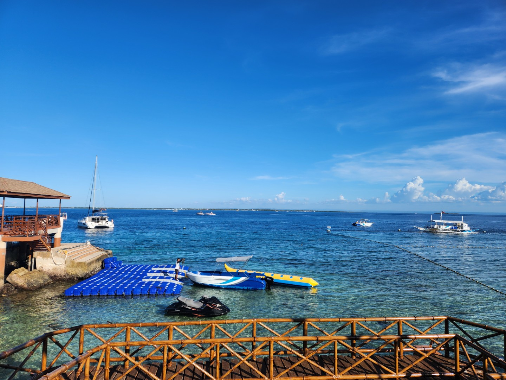

2027 intake
Study MBBS in the Philippines
This site has the details you need before you go: which colleges are on India's NMC list, what the whole five and a half years cost, the documents and the visa, the FMGE after you land back, and what daily life is like in Cebu, Manila and Davao.
Every page carries the date it was last checked. The record behind the advice, and how to correct a page, is on the about page.
Start here
Start with three questions
Most students begin with a college name someone mentioned. The useful order is the other way round: check the recognition, then the money, then the life. Each one has a page.
-
Is this college on India's NMC list?
If it is not, the degree will not get you registered in India. It takes about two minutes to check, and the method is on the page. See the six colleges, or read the 2026 NMC rules first.
-
What do the whole five and a half years cost?
Tuition is the number everyone quotes. Tuition plus hostel plus food plus flights plus the visa renewal is the number that empties the account. The full cost breakdown.
-
What does an ordinary week look like?
Food, weather, safety, the accent in lectures, how far the hospital is. This is what students ask at month three. Life in the Philippines.
Colleges
Six colleges, with the cons included
I do not list every college in the country. These are the six where I studied, visited, or have close friends who graduated. Each page carries the pros, the cons I would tell a cousin, and the official contact details.
GCM Gullas
Cebu City
The lowest entry cost among the six, with FMGE coaching on campus. Hostel is basic and the Indian batch is large.
Read the full reviewSouthwestern University
Cebu City
Where I studied. Strong hospital rotations and a smaller Indian batch. No in-house FMGE coaching, so plan for that.
Read the full reviewUniversity of Perpetual Help
Las Piñas, Metro Manila
The largest Indian community of the six, and the easiest place to find Indian food. Manila traffic is the price.
Read the full reviewDMSF
Davao City
The 3D anatomy lab and heavy patient flow are real. Fees run higher than Cebu, and Davao is a longer flight home.
Read the full reviewBrokenshire College
Davao City
Smaller batches, so faculty know your name. The attached hospital is smaller than DMSF's, which matters in clinical years.
Read the full reviewJose Maria College
Sasa, Davao City
The tightest budget of the six, with medical missions you will not get elsewhere. You will be cooking your own food.
Read the full reviewBefore and after
The questions the main guide does not cover
Three pages for the decisions that come before the application, and one for the years after you land.
Is the degree valid in India?
The NMC list, FMGE or NExT, the twelve month internship and registration, in the order they happen.
Cebu, Manila or Davao?
Living cost, Indian food, safety, hospitals, typhoons and flights, compared honestly.
What happens after the MD?
FMGE, the Indian internship, state registration, NEET-PG, jobs and the timeline.
Documents
The paperwork, in one place
Passport, marksheets, NEET scorecard, birth certificate, police clearance, medical certificate, bank statement. Each one has a format and an authentication step, and the whole list is shorter than the panic around it suggests.
The honest version
What the degree gives you, and what it does not
An MD from a listed Philippine college is recognised in India. That is the whole promise, and it holds only while the college stays on the list. What it does not do is make you a doctor in India on graduation day.
You still sit FMGE or NExT, and you still complete a year of internship in India before you can register. Students who treat that as a formality are the ones who end up repeating the exam. Students who start studying for it in first year clear it.
The clinical training here is genuinely good. Philippine hospitals are busy, and foreign students are allowed hands on patients, which is not true everywhere. That is the part worth paying for.

The mechanics
From shortlist to a seat in class
Five steps, in order. The full version, with the document list and the visa paperwork, is on the process page.
-
Check the college, then email it
Confirm the college on the NMC and WDOMS lists, then write to its international admissions office from the contact on the college's own website.
-
Send documents and get the acceptance letter
Marksheets, passport, birth certificate, photographs. The letter is what the embassy and the airline will ask for.
-
Apply for the student visa
The college issues a support letter. The embassy handles the rest. This is the one stage where paying a visa consultant is reasonable.
-
Book the flight and the first month of housing
Book direct. Reserve a hostel through the student affairs office before you land, then look at apartments once you know the city.
-
Arrive, register, and start the long part
Airport pickup, enrolment, and the first month of figuring out where to eat. The student life page covers that month.
About the author
Who writes this
I finished the MD at Southwestern University in Cebu in 2025 and cleared FMGE on the first attempt. Five and a half years in the country, one degree, one exam, one long flight home.
Everything on this site comes from that: what the hospitals were like, what rent and food actually cost, which subjects nearly broke me, and what the NMC notices mean when you are the one holding the admission letter. Where a claim has a source, the source is linked. Where a price is changing, the page says so.
What you can check
- The NMC and WDOMS lists, linked on every college page.
- Each college's own website and admissions email.
- The 2026 NMC notice, with the official PDF, on the rules page.
- The contact details, in three places, on one page.
Questions
The three that decide everything else
Is an MD from the Philippines valid in India?
Only if the college is on India's NMC list when you enrol and when you graduate. After the MD you sit FMGE or NExT and complete a year of internship in India before you can register to practise.
Check the college on the NMC and WDOMS lists yourself before you pay anything. What the exams involve.
Can I study medicine in the Philippines without clearing NEET?
There is a route through a pre-medical BSBio year, but NEET still has to be cleared before the MD, because NMC requires it for Indian students who want to practise in India. The BSBio year buys time to prepare. It does not replace the exam.
What documents do I need to apply?
Class 10 and 12 marksheets, your NEET scorecard, passport with at least eighteen months of validity, birth certificate, a medical certificate, police clearance and proof of funds. Most colleges also ask for passport photographs and a short personal statement.